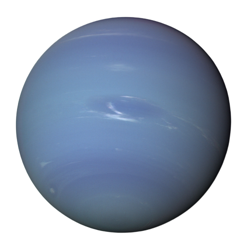

facts
- Neptune, like Uranus, is an ice giant. It’s similar to a gas giant. It is made of a thick soup of water, ammonia, and methane flowing over a solid core about the size of Earth.
- One day on Neptune goes by in 16 hours.
- Neptune has such a long journey around the Sun it takes 165 Earth years to go around once. That’s a long year!
- Neptune has 13 moons (and one more awaiting confirmation of discovery).
- Neptune is the eighth and most distant planet from the Sun. That means Uranus is Neptune’s only neighboring planet.
" big blue planet "
Neptune is dark, cold, and very windy. It's the last of the planets in our solar system. It's more than 30 times as far from the sun as Earth is. Neptune is very similar to Uranus. It's made of a thick fog of water, ammonia, and methane over an Earth-sized solid center. Its atmosphere is made of hydrogen, helium, and methane. The methane gives Neptune the same blue color as Uranus. Neptune has six rings, but they're very hard to see.
gallery

Voyager 2 took this picture of Neptune in 1989.

Clouds streak across Neptune.

Voyager 2's post-encounter view of Neptune's south pole as the spacecraft sped away on a southward trajectory.